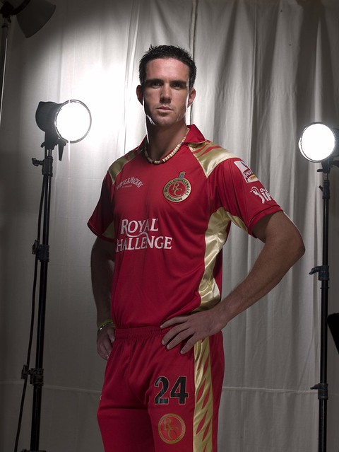
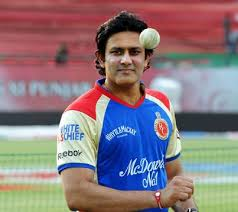
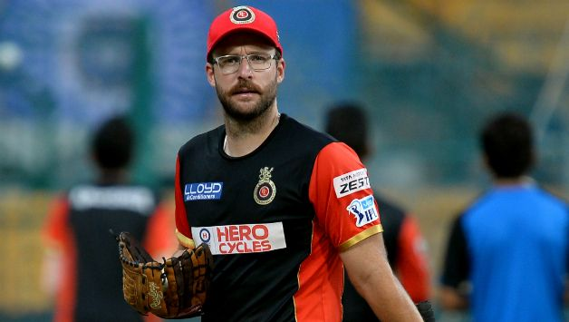

 <link rel="stylesheet" href="home.css">
 <header>
  <div class="logo">
    <a href="index.html"></a>
    <h1>Royal Challengers Bangaluru</h1>
  </div>
  <nav>
    <ul>
      <li><a href="home.html">Home</a></li>
      <li><a href="team.html">Team</a></li>
      <li><a href="matches.html">Matches</a></li>
      <li><a href="news.html">News</a></li>
      <li><a href="contact.html">Contact</a></li>
    </ul>
  </nav>
</header>
<section class="career">
  
  
    <h2>RCB Career Overview</h2>
    <p>
      Since their debut in the inaugural IPL season of 2008, the Royal Challengers Bangalore (RCB) have been one of the most exciting teams in the league. Known for their passionate fanbase and star-studded line-ups, RCB has delivered many memorable moments.
    </p>
  </section>

  
  <section class="captains">
    <h2>RCB Captains (2008–2025)</h2>
    <div class="captain-grid">
      <div class="captain-card">
        
        <h3>Rahul Dravid</h3>
        <p>2008</p>
      </div>
      <div class="captain-card">
        
        <h3>Kevin Pietersen</h3>
        <p>2009</p>
      </div>
      <div class="captain-card">
        
        <h3>Anil Kumble</h3>
        <p>2009–2010</p>
      </div>
      <div class="captain-card">
        
        <h3>Daniel Vettori</h3>
        <p>2011–2012</p>
      </div>
      <div class="captain-card">
        
        <h3>Virat Kohli</h3>
        <p>2013–2021</p>
      </div>
      <div class="captain-card">
        
        <h3>Rajat Patidar</h3>
        <p>2025–Present</p>
      </div>
    </div>
  </section>
  
 
<section class="stats">
    <h2>RCB IPL Stats (2008–2024)</h2>
    <div class="table-container">
      <table>
        <thead>
          <tr>
            <th>Season</th>
            <th>Matches Played</th>
            <th>Wins</th>
            <th>Losses</th>
            <th>Position</th>
            <th>Top Run Scorer</th>
            <th>Top Wicket Taker</th>
          </tr>
        </thead>
        <tbody>
          <tr>
            <td>2008</td>
            <td>14</td>
            <td>4</td>
            <td>10</td>
            <td>7th</td>
            <td>Rahul Dravid (371 runs)</td>
            <td>Zaheer Khan (13 wickets)</td>
          </tr>
          <tr>
            <td>2009</td>
            <td>16</td>
            <td>9</td>
            <td>7</td>
            <td>Runners-Up</td>
            <td>Jacques Kallis (361 runs)</td>
            <td>Anil Kumble (21 wickets)</td>
          </tr>
          <tr>
            <td>2010</td>
            <td>16</td>
            <td>8</td>
            <td>8</td>
            <td>Semi-Finalists</td>
            <td>Jacques Kallis (572 runs)</td>
            <td>Anil Kumble (17 wickets)</td>
          </tr>
          <tr>
            <td>2011</td>
            <td>16</td>
            <td>10</td>
            <td>5</td>
            <td>Runners-Up</td>
            <td>Chris Gayle (608 runs)</td>
            <td>Sreenath Aravind (21 wickets)</td>
          </tr>
          <tr>
            <td>2012</td>
            <td>16</td>
            <td>8</td>
            <td>7</td>
            <td>5th</td>
            <td>Chris Gayle (733 runs)</td>
            <td>Vinay Kumar (19 wickets)</td>
          </tr>
          <tr>
            <td>2013</td>
            <td>16</td>
            <td>9</td>
            <td>6</td>
            <td>5th</td>
            <td>Chris Gayle (708 runs)</td>
            <td>Vinay Kumar (23 wickets)</td>
          </tr>
          <tr>
            <td>2014</td>
            <td>14</td>
            <td>5</td>
            <td>9</td>
            <td>7th</td>
            <td>AB de Villiers (395 runs)</td>
            <td>Varun Aaron (16 wickets)</td>
          </tr>
          <tr>
            <td>2015</td>
            <td>16</td>
            <td>8</td>
            <td>6</td>
            <td>3rd</td>
            <td>AB de Villiers (513 runs)</td>
            <td>Yuzvendra Chahal (23 wickets)</td>
          </tr>
          <tr>
            <td>2016</td>
            <td>16</td>
            <td>9</td>
            <td>7</td>
            <td>Runners-Up</td>
            <td>Virat Kohli (973 runs)</td>
            <td>Yuzvendra Chahal (21 wickets)</td>
          </tr>
          <tr>
            <td>2017</td>
            <td>14</td>
            <td>3</td>
            <td>10</td>
            <td>8th</td>
            <td>Virat Kohli (308 runs)</td>
            <td>Pawan Negi (16 wickets)</td>
          </tr>
          <tr>
            <td>2018</td>
            <td>14</td>
            <td>6</td>
            <td>8</td>
            <td>6th</td>
            <td>Virat Kohli (530 runs)</td>
            <td>Umesh Yadav (20 wickets)</td>
          </tr>
          <tr>
            <td>2019</td>
            <td>14</td>
            <td>5</td>
            <td>8</td>
            <td>8th</td>
            <td>Virat Kohli (464 runs)</td>
            <td>Yuzvendra Chahal (18 wickets)</td>
          </tr>
          <tr>
            <td>2020</td>
            <td>15</td>
            <td>7</td>
            <td>9</td>
            <td>4th</td>
            <td>Devdutt Padikkal (473 runs)</td>
            <td>Yuzvendra Chahal (21 wickets)</td>
          </tr>
          <tr>
            <td>2021</td>
            <td>15</td>
            <td>9</td>
            <td>6</td>
            <td>3rd</td>
            <td>Glenn Maxwell (513 runs)</td>
            <td>Harshal Patel (32 wickets)</td>
          </tr>
          <tr>
            <td>2022</td>
            <td>16</td>
            <td>9</td>
            <td>7</td>
            <td>4th</td>
            <td>Faf du Plessis (468 runs)</td>
            <td>Wanindu Hasaranga (26 wickets)</td>
          </tr>
          <tr>
            <td>2023</td>
            <td>14</td>
            <td>7</td>
            <td>7</td>
            <td>6th</td>
            <td>Faf du Plessis (730 runs)</td>
            <td>Mohammed Siraj (19 wickets)</td>
          </tr>
          <tr>
            <td>2024</td>
            <td>9</td>
            <td>2</td>
            <td>7</td>
            <td>10th</td>
            <td>Virat Kohli (741 runs)</td>
            <td>Yash Dayal (15 wickets)</td>
          </tr>
        </tbody>
      </table>
    </div>
  </section>
  